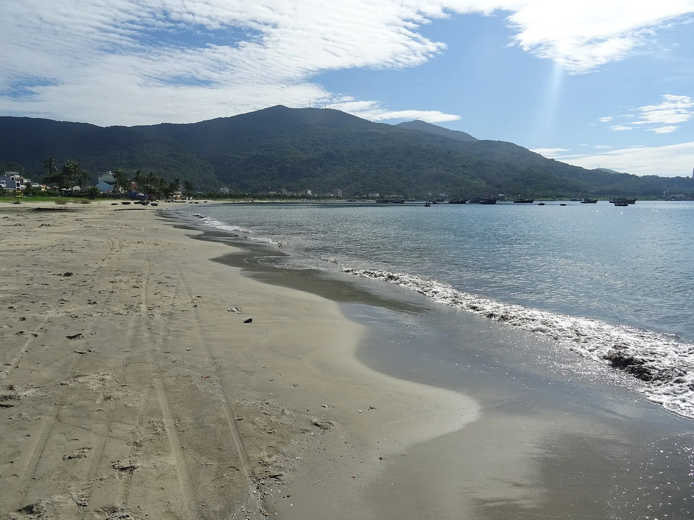

Plage de My Khe
Da Nang, Vietnam · baignade, surf

Longue plage urbaine de Da Nang, face à la mer de Chine méridionale. Calme l’été, elle reçoit des vagues surfables pendant la mousson d’hiver, d’octobre à mars environ.
- Lieu
- Da Nang, Vietnam
- Niveau
- Débutant
- Activités
- baignade, surf
- Type d'eau
- Mer / océan
- Coordonnées
- 16.08, 108.25 (position approximative du secteur)
Dangers à connaître
- Courants d’arrachement par mer formée.
- Typhons possibles de septembre à novembre.
Le conseil d'Ocean Buddy
Baigne-toi devant les postes de sauveteurs et reste hors de l’eau quand le drapeau rouge est hissé.
Ouvrir dans Ocean Buddy Télécharger sur l'App Store
Source : Fiche Ocean Buddy · septembre 2026 · à vérifier localement.